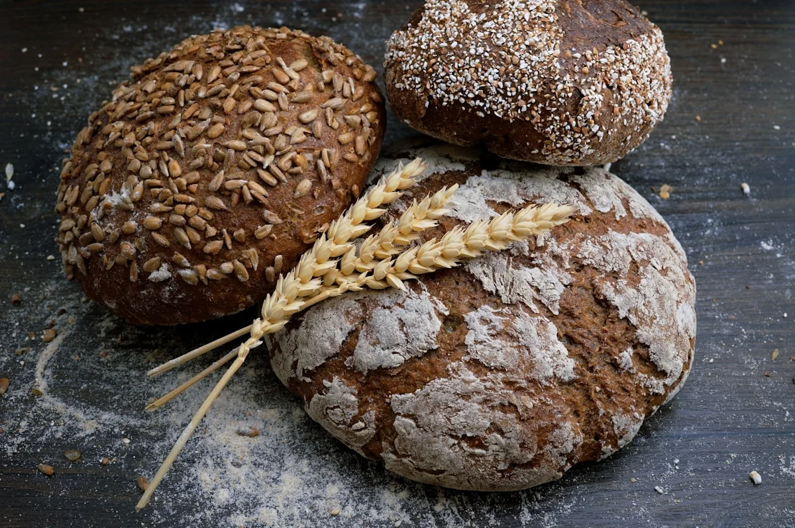
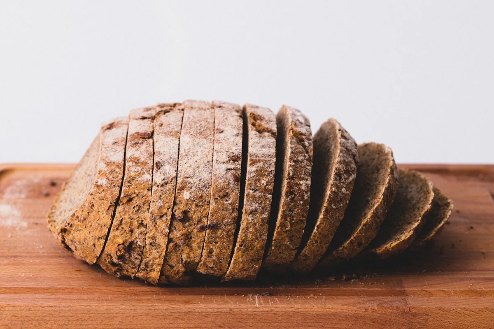

Им помагаме на производителите на леб и брашно да создадат подобри производи, побрзо.
КИДЕКС ДООЕЛ нуди консултантски услуги за преработка на пченица и производство на брашно, пекарски и кондиторски производи и тестенини, со 25 години практично искуство.

Експертиза од зрно до готов производ.
Оптимизација на леб и брашно
Подобрете го она што веќе функционираПрецизно приспособување на состојките, процесите и рецептурите за подобар квалитет, вкус и хранлива вредност на пекарските производи, со зачувување на успешните практики во производството.
Повеќе за услугатаРазвој на нови производи
Создадете го следниот производСоздавање и лансирање нови производи според реалната побарувачка и потребите на потрошувачите — од почетен концепт до формулација подготвена за производство.
Повеќе за услугатаЛабораториска опрема
Мерете со сигурностЕкспертиза за лабораториска опрема, контрола на квалитетот, стручна анализа и избор на соодветни инструменти за пченица, брашно, пекарски и кондиторски производи и тестенини.
Повеќе за услугатаБлиску до производот. Поврзани со она што следува.
Од состојките и производната линија до дигиталните алатки за бизнисот, KIDEX се фокусира на практични резултати.

Подобрите производи почнуваат со внимание кон деталите.
Оптимизација на производи
Состојки, процес и резултат.
Развој на нови производиРешенија создадени за вистински тимови.
ИТ решенија01/03
Искусен консултантски партнер за прехранбена технологија.
КИДЕКС ДООЕЛ има 25 години практично искуство во преработка на пченица и производство на брашно, пекарски и кондиторски производи и тестенини.
Со успешни проекти во Северна Македонија и регионот, KIDEX соработува со производителите за подобрување на производите, процесите и резултатите.
KIDEX е блиску до состојките — зрното, брашното, тестото — затоа што токму таму се создаваат квалитетот и вкусот.
Повеќе за KIDEXИновации, консалтинг и решенија — еден континуиран процес.
Секоја соработка почнува со разбирање на постојниот производ, продолжува со практично советување и води до конкретна рецептура, процес или план за лансирање што може да се примени во производството.
Иновации
Нов поглед кон состојките, процесите и формите, заснован на реалните услови на производство.
Консалтинг
Работиме непосредно со тимот на производителот и остануваме вклучени во процесот.
Решенија
Резултатот е применливо решение — подобрена рецептура, нова формулација или појасен процес.